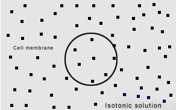

Take an onion bulb. Peel off the skin from its inner side using forceps. Then, place individual layers in a watch glass containing water. Carefully transfer each layer on a clean glass slide using a paint brush. Add one-two drops of iodine solution on the material to stain the cell for visualization. Place a cover slip on the material in such a way that no bubbles are formed. Observe the slide under the microscope.
You will observe a number of rectangular chambers under the microscope (as shown in the given figure). Each chamber is a cell here. You will find a similar pattern and structure in each slide
All living organisms are made up of cells. The Cell is the structural and functional unit of life It is the smallest living entity found in living organisms.
The term cell was introduced by Robert Hooke in 1665, while examining a slice of cork through his microscope. Cork is obtained from the bark of a tree. Under a compound microscope, he observed many small compartments resembling like a honeycomb. He termed these as cells. The given table lists some properties of cells.
The Cell is the smallest living unit of life.
It is so small that it is not visible to the naked eye.
The shape of the cell varies in different organisms and within an organism.
Size of cells also differs.
All living cells exhibit certain basic properties like respiration, growth, metabolism etc.
Cells originate from a pre-existing cell. A mother cell divides into two identical daughter cells. Hence, cells exhibit cell division.
Cell is the basic unit of life. All cells vary in their shape, size, and activity they perform. In fact, the shape and size of the cell is related to the specific functions they perform.
The table given below lists the shape and size of certain cells.
| Cell | Shape | Size |
|---|---|---|
| Bacteria | Round shape, rod shape, spiral shape etc. | 0.1 to \( 0.5 \mu m \) |
| Human egg | Round | \( 100 \mu m \) in diameter |
| Muscle cell | Rod-shaped with pointed ends | 1 - 40 mm long |
| Human epidermal cell | Columnar | - |
| Red blood cells | Bi-concave | \( 7 \mu m \) in diameter |
| White blood cells | Irregular | 10-12 \( \mu m \) |
| Lymphocytes | Round shaped | 5-6 \( \mu m \) in diameter |
Amoeba is a simple, unicellular organism. Larger animals are more evolved than unicellular Amoeba. Do you know the reason for this?
Have you ever tried to know how multicellular organisms evolve?
Multicellular organisms have several advantages over unicellular organisms.
As division of labour exists in multicellular organisms, a variety of tasks can be performed efficiently. This gives the organism a wide range of adaptability to survive.
In multicellular organisms, dead cells play an important role. For example, dead epidermal cells in the skin of animals protect the underlying cells.
Do you know what division of labour is?
Division of labour suggests the specialized functions of organs. All organs, tissues, or cells cannot carry out all the functions. They are evolved to carry out a specific set of functions. Each organ system coordinates with the other to carry out functions required for life. Therefore, by dividing the work or function, they minimize the load of carrying out all functions and therefore, they work or function efficiently.
Let us learn more about unicellular and multicellular cells.
Organisms are often grouped as unicellular or multicellular organisms. Unicellular organisms represent a single cell, while multicellular organisms are made up of numerous cells.
Some Interesting Facts:
The smallest cell in the universe is the Mycoplasma, a type of bacteria. Its diameter is \( 0.1 \mu m. \)
The smallest cell in the human body, in terms of volume, is the sperm cell.
The table given below lists the characteristics of some unicellular and multicellular organisms with a few examples.
| Unicellular organism | Multi celuar oragnism |
|---|---|
| A single cell represents an organism. The entrie organism is made up of a single cell | More than one or many cells combine and coordinate to form a multicellular oragnism |
Characteristics
|
Characteristics
|
| Unicellular organism | Multicellular organism |
|---|---|
|
|
| Few examples of unicellular organisms are bacteria, virus, yeast, Amoeba, Paramecium, Chlamydomonus etc. | Few examples of multicellular organisms are humans, plants, insects, snakes, birds, lizards etc. |
Cells can also be classified on the basis of their cellular complexity.
Based on their sub-cellular organization and cellular complexity, cells can be classified as prokaryotes and eukaryotes. Animals, plants, fungi, protozoans, and algae, all are composed of eukaryotic type of cells, while bacteria are prokaryotes in nature.
Prokaryotes are unicellular organisms, while eukaryotes are usually multicellular organisms. Yeast is exceptionally a unicellular eukaryote. The table given below lists the characteristic features of both prokaryotes and eukaryotes.
| Characteristic | Prokaryote | Eukaryote |
|---|---|---|
| Size of the cell | Small in size | Vary in size, generally larger than prokaryotes |
| Nucleus | Nucleus with nuclear membrane is absent | A well-defined nucleus with nuclear membrane is present |
| Membrane-enclosed organelles | Organelles like mitochondria and plastids, which have a membrane around them are absent | Membrane-enclosed organelles like mitochondria and plastids are present |
| Cell wall | Cell wall is usually present in prokaryotes and is composed of peptidoglycan | Cell wall is usually present in plant cells and is composed of cellulose |
| Genetic material | Present as nucleus | Present inside the nucleus |
We know that a cell contains a cell wall, a plasma membrane, and a cytoplasm.
Can you identify the plasma membrane and the cytoplasm in a cell?
Collect a small piece of onion. Peel off the skin (also called epidermis) from the concave side of the onion using forceps. Place this thin layer of onion skin in a watch glass containing water. Transfer it on a clean glass slide using a paint brush and add a drop of iodine solution to it. Mount a cover slip on the material in such a way that no bubbles are formed inside. Observe it under the microscope.
What do you observe?
You will observe cells. There is a clear boundary around cells, which is the plasma membrane. A small, dark coloured, round-shaped structure can be seen inside the cell. This is the nucleus of cells. The entire space (apart from the nucleus) is enclosed by the plasma membrane.
The basic component of cells is the protoplasm and plasma membrane. Protoplasm consists of the cytoplasm and the nucleus. Cytoplasm is the cellular matrix in which the nucleus is suspended. However, in bacteria, cellular materials are surrounded by the bacterial cell wall.
In plant cells, the outermost covering also constitutes the cell wall, beneath which the plasma membrane lies.
Let us study the plasma membrane, the cell wall, and the cytoplasm in detail. The plasma membrane is the outermost covering in animal cells. However, in plant cells and in certain unicellular organisms, the outermost covering is the cell wall. The plasma membrane is a selectively permeable lipid bilayer.
Lipids and proteins are major components of the cell membrane. However, a small amount of carbohydrates can also be found in the plasma membrane. The plasma membrane is flexible in nature. The table given below lists the various functions of the plasma membrane
| Functions of Plasma membrane |
|---|
|
Let us explore the process of diffusion and osmosis in detail.
Do you know how nutrients are absorbed in the digestive tract?
In the digestive tract, food is broken down into simpler products such as glucose. Nutrients are then absorbed by the intestinal cells through a process known as diffusion.
Do you know how oxygen reaches the cells in the human body?
The inhaled air contains oxygen. In the lungs, oxygen diffuses through the blood capillaries and reaches the red blood cells. There, it binds with haemoglobin to form oxy-haemoglobin. Oxy-haemoglobin is then circulated throughout the body. In tissues, where oxygen concentration is lesser than blood orthe red blood cells, oxygen diffuses out of it and enters into tissues and then into cells.
Osmosis
Osmosisis the movement of water molecules across a semi-permeable membrane from a higher to a lower concentration.
Plasma membrane acts as a semi-permeable membrane. Water moves in and out of cells through osmosis to maintain the amount of water in cells and in the outside environment.
Osmosis How does water move from one region to another?
Solutions can be of three types: isotonic, hypotonic, and hypertonic. Let us explore the differences between these solutions.
| An isotonic solution contains similar solute (salt or sugar) and water concentration, both inside the cell and in the medium (where the cell is suspended). While working with biological samples, salt solution of 0.9% is used as an isotonic solution. |
|

|
| A hypotonic solution contains lesser salt (i.e., higher water concentration) in the medium than the cell. The cell contains higher solute and lower water concentration. When cells are kept in such a solution, water enters inside the cells. It results in swelling and bursting of cells. |
|
|
| A hypertonic solution contains more salt concentration (i.e., lower water concentration) than cells. When cells are placed in such solutions, water moves out of the cells. The cell shrinks, resulting in the breaking down of the plasma membrane. |
|
|
Let us perform an experiment to understand osmosis using raisins or apricots.
Take raisins in three breakers. Pour pure water in the first beaker, isotonic solution in the second, and a high concentrated salt solution in the third beaker.
What do you observe?
After five minutes, you will observe that the raisins swell up in the first beaker. Pure water does not contain salt. Thus, to maintain equilibrium, water enters into the raisins. This swells up the raisins.
In the second beaker, you will see no change in the raisins. An isotonic solution contains similar salt concentration as that of raisins. This produces osmotic balance. Hence, no change can be observed. In the third beaker, you will observe that the raisins shrink. This beaker contains a hypertonic solution. To maintain equilibrium, water moves out ofthe raisins. This shrinks the raisins. Excessive shrinkage results in the breakdown of the membrane. This phenomenon is called plasmolysis.
Artificial kidney dialysis!
An artificial dialysis must be performed when the kidneys stop functioning. Artificial kidney dialysis uses the cellulose membrane, which acts as a semi-permeable membrane. Such a system filters blood through osmosis and diffusion (as the kidneys do). This keeps the body activity normal.
Differences between osmosis and diffusion Can you distinguish between diffusion and osmosis?
The table given below lists some distinguishing characteristics of diffusion and osmosis.
| Diffusion | Osmosis |
|---|---|
| Solute molecules move across a concentration gradient. | Water molecules move across a concentration gradient |
| It does not require a semi-permeable membrane. | It requires a semi-permeable membrane. |
Plasma membrane of cells acts as semi-permeable membrane. It allows the movement of water and gaseous molecules freely (diffusion). However, it does not allow the movement of other larger molecules such as sugar, amino acids, etc. All such molecules are transported across the membrane by facilitated diffusion (with the help of other carrier proteins) and active transport (with the expenditure of energy). The table given below lists the significance of diffusion in living organisms.
| Biological importance of diffusion |
|---|
|
The table given below lists the significance of osmosis in living organisms.
| Biological importance of osmosis |
|---|
|
Do you know why brine is used to preserve food?
Brine is a high salt concentration solution. Perishable food items such as fish, meat, etc. are preserved for a longer period of time in such solutions. Brine is hypertonic for bacteria. Therefore, water comes out of bacterial cells, causing dehydration. This kills the bacteria. Thus, bacterial contamination is prevented.
Cell wall
The Cell wallis the outermost rigid structure in plant cells. The main component providing structural strength to the cell wall is cellulose. However, the bacterial cell wall is mainly composed of peptideglycan. The table given below lists the various functions ofthe cell wall.
Functions of cell wall:
It protects intracellular organelles from the outside environment.
It can withstand dilute hypotonic media and prevents bursting of cells. Therefore, plant cells withstand changes in environmental concentration better than animal cells.
Plasma membrane establishes communication between cells.
Cytoplasm
The cytoplasm is the inner content of the cell membrane, which is separated from the nucleus. It includes cytosol, organelles, and inclusions. Cytosol is a soft and sticky, semi-transparent fluid in which various cell organelles are suspended. Inclusions are stored nutrients. The table given below lists various functions ofthe cytoplasm.
Functions of Cytoplasm:
It is the region where many cellular activities take place.
It mostly consists of water and it balances the water content in the cell.
It contains cytoskeleton, which maintains the shape and movement of cells.
Cytoplasmic streaming or circulation of the cytoplasm helps in the proper distribution of cellular organelles during cell division, growth, etc.
Do you know what cybrid is?
Cybrids are cytoplasmic hybrids. Plasma membrane of cells (of different origins) is broken down to obtain cytoplasm. These naked cells are then fused to obtain hybrid cells called cybrids. Cybrids are often known as heterokaryon as they contain the nucleus from different origins. Cybrids are important for research purposes.
| Some interesting facts |
|---|
|
We often hear of scientists producing clones.
Do you know what clones are? Do you know how clones are created?
Cloning refers to an identical copy of something. In biology, clones signify genetically identical organisms. The nucleus holds the genetic material. Therefore, if the nucleus is similar in two cells, then they would be similar. Hence, clones are produced by obtaining the nucleus from the cells of donor organisms.
The nucleus, thus obtained, is reintroduced inside the cell whose nucleus is removed. These cells are allowed to grow by providing all the required conditions. Some of these cells divide, producing a zygote. This zygote is then placed inside the uterus of a female recipient to give birth to a baby. Thus, the baby born is identical to the donor organism (whose nucleus is used) and is said to be a clone of the donor.
Have you ever seen a nucleus?
Nucleus is visible under a light microscope. It is acidic in nature. Any basic stain can be used to see the nucleus. Take a toothpick and spool out the materials gently from the inner surface of your cheek. Spread the materials on a clean glass slide and dry it. Add a few drops of methylene-blue solution to the material for staining. After staining, place a cover slip on the material and observe under the microscope.
What do you observe?
You will observe numerous round-shaped cells, which are light blue in colour. Inside each cell, a nucleus can be observed as a dark blue coloured structure.
The nucleus is the largest organelle present in the eukaryotic cells. In mammalian cells, the size of the nucleus typically varies from 11 to 22 gm in diameter. It is spherical in shape.
| Structural component | Feature |
|---|---|
| Nuclear envelope |
|
| Nucleoplasm |
|
| Nucleolus |
|
| Chromatin network |
|
How are chromosomes and genetic material present in cells?
Thus, the nucleus controls all life activities. The entire segment of the DNA present is not always functional. The functional regions are calledgenes.
Role of the nucleus in cellular reproduction and heredity
Genetic material is present inside the nucleus. The nucleus plays an important role in cellular reproduction as it divides and passes the genetic material to the offspring. The genetic material decides both the appearance and the function of cells. Therefore, heredity depends upon the division of nucleus.
| Do you know that matured, human red blood cells do not contain a nucleus? |
|---|
Do you know what vacuoles are?
Vacuoles are membrane-bound structures, which are believed to store ergastic substances of cells. In plant cells, vacuoles are large in size, while in animal cells vacuoles are small. The table given below lists some functions of vacuoles.
Functions of vacuoles:
They help in the removal of unwanted structural debris.
They store all the waste products of cells.
They maintain the turgor pressure within cells.
In Amoeba, food vacuoles store food.
Endoplasmic Reticulum, or ER,is an interconnected network of membranous
structures like tubules, vesicles, and cisternae. Cisternae are the flattened disk-like membranous structures. Tubules are tubular in shape, while vesicles are sac-like structures.
There are two types of endoplasmic reticulum, namely smooth endoplasmic reticulum (SER) and rough endoplasmic reticulum (RER). When ribosomes get attached to the surface Smooth E.R of smooth endoplasmic reticulum, it becomes rough endoplasmic reticulum.
Functions of smooth endoplasmic reticulum
Smooth ER synthesizes fats and lipids.
It also takes part in the metabolism of carbohydrates.
It actively participates in drug detoxification.
It maintains the calcium ion concentration in the cytosol. Functions of
Functions of smooth endoplasmic reticulum
Most of the lysosomal proteins are produced in the rough ER.
It transports proteins to various destinations like the plasma membrane.
This is the major site of glycosylation (addition of carbohydrates in proteins).
Golgi apparatus are the membrane-bound, sac-like structures called cistemae. They are arranged parallel to each other in stacks. They were discovered by Camillo Golgi in 1898. Golgi body is usually composed of five-eight cisternae in stacks. Vesicles leave the Golgi body from one end known as the cis face. The other end is known as the trans face. The table given below lists some functions of the Golgi apparatus.
Functions of Golgi apparatus:
It involves the transport of lipids in cells.
It involves the formation of lysosomes.
It also takes part in glycosylation and phosphorylation of certain proteins.
It plays an important role in the production of proteoglycans. Proteoglycans are the molecules present in the extra cellular matrix of animal cells.
Mitochondria is a membrane-enclosed organelle found in eukaryotic cells.
Mitochondria are responsible for the production of most of the energy (or ATP) in cells. Therefore, mitochondria are also known as the power house of cells. A mitochondrion is composed of two lipid membranes, enclosing the matrix. The inner membrane gets folded to form numerous cristae. Cristae are the main site for ATP production. Mitochondrial matrix contains mitochondrial DNA and ribosomes.
Functions of mitochondria:
They produce energy required for cells in the form ofATP.
They also regulate the free calcium ion concentration in the cytosol.
They participate in apoptosis or programmed cell death.
Lysosomesare the membrane-bound vesicles, which contain digestive (hydrolytic) enzymes like acid hydrolase. They digest a variety of substances including worn out organelles, food particles, viruses, and bacteria. They are also known as 'suicide-bags' of cells as they burst out and release hydrolytic enzymes in the cytosol, where cells are heavily injured.
Functions of lysosomes:
They digest macromolecules by phagocytosis, endocytosis, or autophagy
They also take part in auto-cell lysis.
Do you know what plastids are?
Plastids are major organelles found in plant cells and algae. There are two major types of plastids, namely chromoplasts and leucoplasts. Chromoplasts are coloured plastids, while leucoplasts are white or colourless plastids. Chromoplasts contain coloured pigments like carotene (orange), xanthophylls (yellow) etc. These pigments are responsible for the colour of plants. Unlike chromoplasts, leucoplasts lack pigments. Chloroplasts are plastids containing the pigment called chlorophyll. A chloroplast is enclosed by two lipid membranes.
The inner matrix is called the stroma. Thylakoids are the sub-organelles arranged in stacks within the stroma to form grana. The thylakoids are believed to be the main site for photosynthesis. Plastids also contain their own DNA and ribosomes.
Functions of plastids:
They carry out the process of photosynthesis.
They contribute to the colour of leaves, flowers etc.